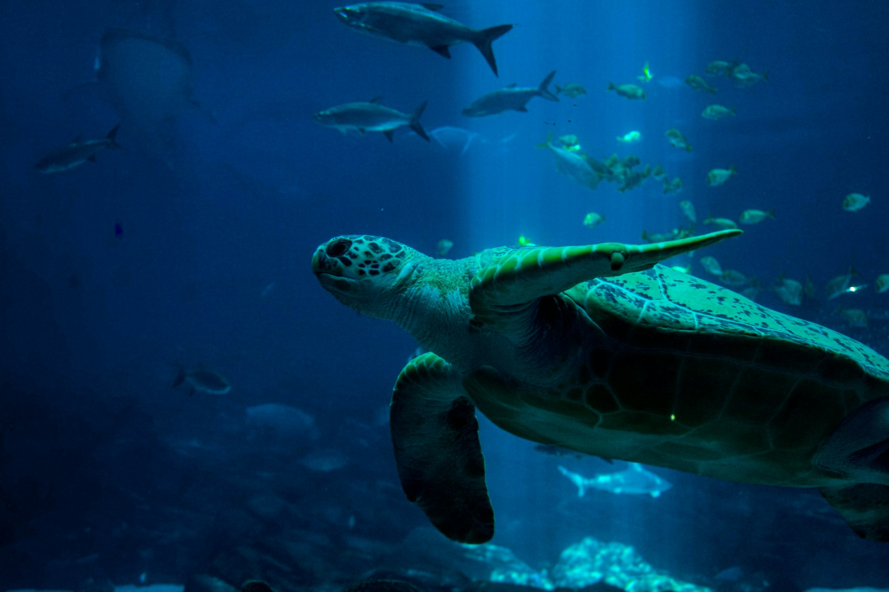
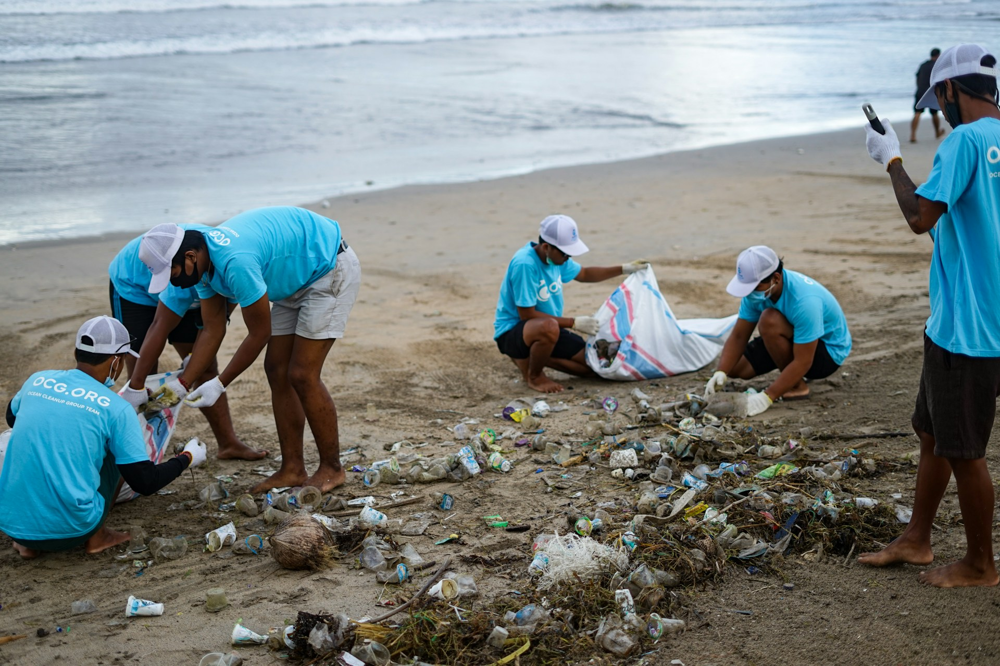
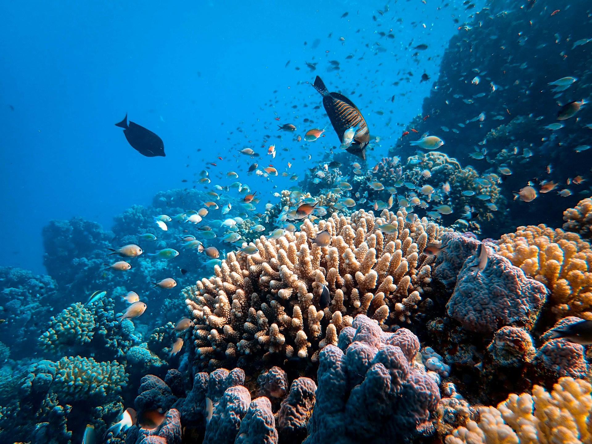
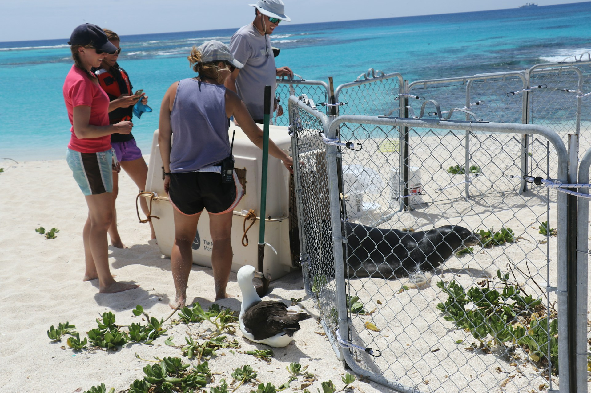
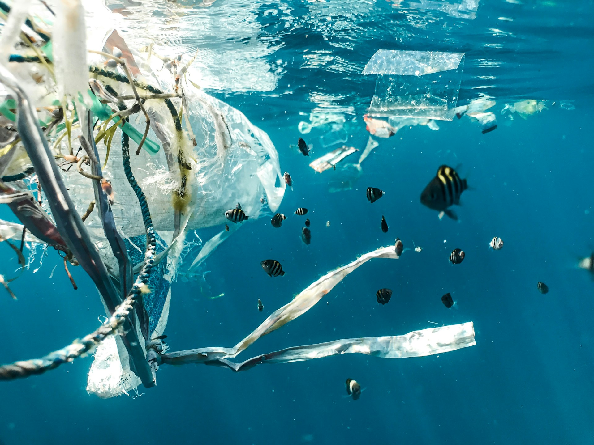
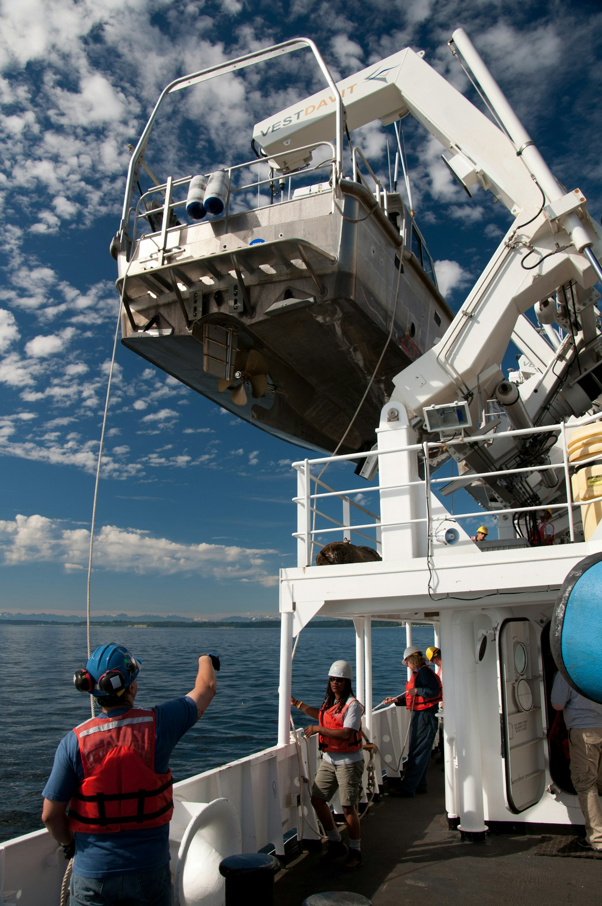
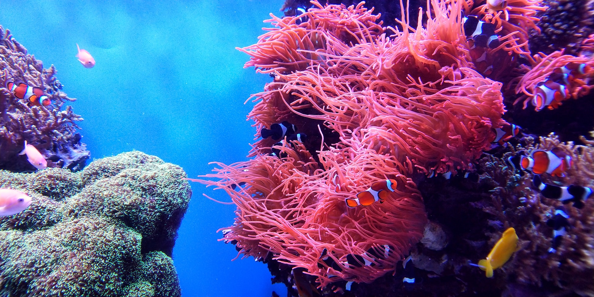

Proteger el mayor ecosistema del planeta
Los océanos cubren más del 70 % de la superficie terrestre y albergan casi un millón de especies conocidas.


El ODS 14 busca proteger los océanos y promover el uso sostenible de los recursos marinos. Los mares cubren gran parte del planeta, regulan el clima, absorben carbono y sostienen la vida en la Tierra, además de proveer alimentos, energía y recursos esenciales para nuestro futuro.
Los océanos cubren más del 70 % de la superficie terrestre y albergan casi un millón de especies conocidas.

Los océanos regulan el clima mundial, producen recursos esenciales para millones de personas y sostienen una enorme biodiversidad. Sin embargo, la contaminación, el calentamiento de las aguas y la explotación irresponsable amenazan su equilibrio. Protegerlos es fundamental para garantizar un futuro sostenible.
Conocer metasReducir el consumo de plástico y elegir productos obtenidos de forma responsable ayuda a proteger los ecosistemas marinos.
Las actividades humanas pueden comprometer los recursos naturales y culturales de los que dependen muchas comunidades costeras.


El Acuerdo sobre la Biodiversidad Marina en Alta Mar marca un paso clave para proteger ecosistemas fuera de las jurisdicciones nacionales.
Ver másNovedad

Nuevas reservas oceánicas fueron creadas alrededor del mundo para conservar especies vulnerables y hábitats esenciales.
Ver másNovedad

Países y organizaciones internacionales avanzan en acuerdos para reducir la contaminación por residuos plásticos en los océanos.
Ver másNovedad

La inversión en investigación marina permite comprender mejor los ecosistemas y desarrollar estrategias de conservación más efectivas.
Ver más
Proyectos de recuperación ambiental están ayudando a reconstruir arrecifes dañados por el calentamiento global y la contaminación.
Ver más